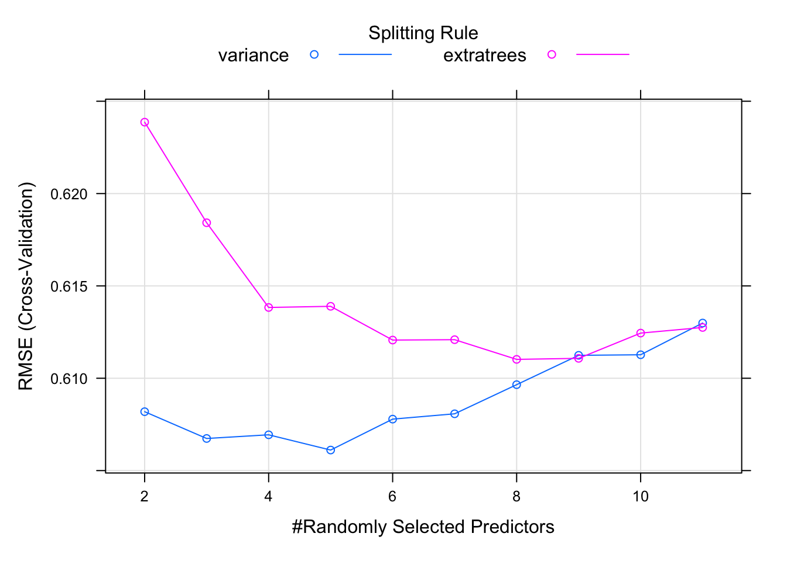

Chapter 17 Modeling
17.1 Modeling notes
Notes on/inspired by the Machine Learning with caret in R DataCamp course. I’d like to better understand machine learning, especially as it pertains to classification problems. Most discussions begin with regression examples, so these will also be addressed in order to build a better foundation. This is the general approach of James, Witten, Hastie and Tibshirani in An Introduction to Statistical Learning with Applications in R, too.
A regression example from the course:
library(caret)## Loading required package: lattice##
## Attaching package: 'caret'## The following object is masked from 'package:purrr':
##
## liftmodel <- train(
price~.,
diamonds,
method = "lm",
trControl = trainControl(
method = "cv",
number = 10,
verboseIter = TRUE
)
)## + Fold01: intercept=TRUE
## - Fold01: intercept=TRUE
## + Fold02: intercept=TRUE
## - Fold02: intercept=TRUE
## + Fold03: intercept=TRUE
## - Fold03: intercept=TRUE
## + Fold04: intercept=TRUE
## - Fold04: intercept=TRUE
## + Fold05: intercept=TRUE
## - Fold05: intercept=TRUE
## + Fold06: intercept=TRUE
## - Fold06: intercept=TRUE
## + Fold07: intercept=TRUE
## - Fold07: intercept=TRUE
## + Fold08: intercept=TRUE
## - Fold08: intercept=TRUE
## + Fold09: intercept=TRUE
## - Fold09: intercept=TRUE
## + Fold10: intercept=TRUE
## - Fold10: intercept=TRUE
## Aggregating results
## Fitting final model on full training set# Print model to console
model## Linear Regression
##
## 53940 samples
## 9 predictor
##
## No pre-processing
## Resampling: Cross-Validated (10 fold)
## Summary of sample sizes: 48546, 48546, 48545, 48546, 48545, 48547, ...
## Resampling results:
##
## RMSE Rsquared MAE
## 1130.811 0.9196688 740.5007
##
## Tuning parameter 'intercept' was held constant at a value of TRUENote that caret handles the work of splitting test sets and calculating RMSE.
Another example from the DataCamp course.
library(MASS)##
## Attaching package: 'MASS'## The following object is masked from 'package:dplyr':
##
## select# Fit lm model using 5-fold CV: model
model <- train(
medv~.,
Boston,
method = "lm",
trControl = trainControl(
method = "cv",
number = 5,
verboseIter = TRUE
)
)## + Fold1: intercept=TRUE
## - Fold1: intercept=TRUE
## + Fold2: intercept=TRUE
## - Fold2: intercept=TRUE
## + Fold3: intercept=TRUE
## - Fold3: intercept=TRUE
## + Fold4: intercept=TRUE
## - Fold4: intercept=TRUE
## + Fold5: intercept=TRUE
## - Fold5: intercept=TRUE
## Aggregating results
## Fitting final model on full training set# Print model to console
model## Linear Regression
##
## 506 samples
## 13 predictor
##
## No pre-processing
## Resampling: Cross-Validated (5 fold)
## Summary of sample sizes: 405, 404, 406, 404, 405
## Resampling results:
##
## RMSE Rsquared MAE
## 4.85946 0.7262448 3.423241
##
## Tuning parameter 'intercept' was held constant at a value of TRUECross validation can itself be repeated. The following is a 5-fold cross validation repeated 5 times.
# Fit lm model using 5 x 5-fold CV: model
model <- train(
medv ~ .,
Boston,
method = "lm",
trControl = trainControl(
method = "repeatedcv",
number = 5,
repeats = 5,
verboseIter = TRUE
)
)## + Fold1.Rep1: intercept=TRUE
## - Fold1.Rep1: intercept=TRUE
## + Fold2.Rep1: intercept=TRUE
## - Fold2.Rep1: intercept=TRUE
## + Fold3.Rep1: intercept=TRUE
## - Fold3.Rep1: intercept=TRUE
## + Fold4.Rep1: intercept=TRUE
## - Fold4.Rep1: intercept=TRUE
## + Fold5.Rep1: intercept=TRUE
## - Fold5.Rep1: intercept=TRUE
## + Fold1.Rep2: intercept=TRUE
## - Fold1.Rep2: intercept=TRUE
## + Fold2.Rep2: intercept=TRUE
## - Fold2.Rep2: intercept=TRUE
## + Fold3.Rep2: intercept=TRUE
## - Fold3.Rep2: intercept=TRUE
## + Fold4.Rep2: intercept=TRUE
## - Fold4.Rep2: intercept=TRUE
## + Fold5.Rep2: intercept=TRUE
## - Fold5.Rep2: intercept=TRUE
## + Fold1.Rep3: intercept=TRUE
## - Fold1.Rep3: intercept=TRUE
## + Fold2.Rep3: intercept=TRUE
## - Fold2.Rep3: intercept=TRUE
## + Fold3.Rep3: intercept=TRUE
## - Fold3.Rep3: intercept=TRUE
## + Fold4.Rep3: intercept=TRUE
## - Fold4.Rep3: intercept=TRUE
## + Fold5.Rep3: intercept=TRUE
## - Fold5.Rep3: intercept=TRUE
## + Fold1.Rep4: intercept=TRUE
## - Fold1.Rep4: intercept=TRUE
## + Fold2.Rep4: intercept=TRUE
## - Fold2.Rep4: intercept=TRUE
## + Fold3.Rep4: intercept=TRUE
## - Fold3.Rep4: intercept=TRUE
## + Fold4.Rep4: intercept=TRUE
## - Fold4.Rep4: intercept=TRUE
## + Fold5.Rep4: intercept=TRUE
## - Fold5.Rep4: intercept=TRUE
## + Fold1.Rep5: intercept=TRUE
## - Fold1.Rep5: intercept=TRUE
## + Fold2.Rep5: intercept=TRUE
## - Fold2.Rep5: intercept=TRUE
## + Fold3.Rep5: intercept=TRUE
## - Fold3.Rep5: intercept=TRUE
## + Fold4.Rep5: intercept=TRUE
## - Fold4.Rep5: intercept=TRUE
## + Fold5.Rep5: intercept=TRUE
## - Fold5.Rep5: intercept=TRUE
## Aggregating results
## Fitting final model on full training set# Print model to console
model## Linear Regression
##
## 506 samples
## 13 predictor
##
## No pre-processing
## Resampling: Cross-Validated (5 fold, repeated 5 times)
## Summary of sample sizes: 405, 405, 404, 405, 405, 405, ...
## Resampling results:
##
## RMSE Rsquared MAE
## 4.86727 0.7247148 3.409362
##
## Tuning parameter 'intercept' was held constant at a value of TRUEpredict(model, Boston)## 1 2 3 4 5 6 7
## 30.0038434 25.0255624 30.5675967 28.6070365 27.9435242 25.2562845 23.0018083
## 8 9 10 11 12 13 14
## 19.5359884 11.5236369 18.9202621 18.9994965 21.5867957 20.9065215 19.5529028
## 15 16 17 18 19 20 21
## 19.2834821 19.2974832 20.5275098 16.9114013 16.1780111 18.4061360 12.5238575
## 22 23 24 25 26 27 28
## 17.6710367 15.8328813 13.8062853 15.6783383 13.3866856 15.4639765 14.7084743
## 29 30 31 32 33 34 35
## 19.5473729 20.8764282 11.4551176 18.0592329 8.8110574 14.2827581 13.7067589
## 36 37 38 39 40 41 42
## 23.8146353 22.3419371 23.1089114 22.9150261 31.3576257 34.2151023 28.0205641
## 43 44 45 46 47 48 49
## 25.2038663 24.6097927 22.9414918 22.0966982 20.4232003 18.0365509 9.1065538
## 50 51 52 53 54 55 56
## 17.2060775 21.2815254 23.9722228 27.6558508 24.0490181 15.3618477 31.1526495
## 57 58 59 60 61 62 63
## 24.8568698 33.1091981 21.7753799 21.0849356 17.8725804 18.5111021 23.9874286
## 64 65 66 67 68 69 70
## 22.5540887 23.3730864 30.3614836 25.5305651 21.1133856 17.4215379 20.7848363
## 71 72 73 74 75 76 77
## 25.2014886 21.7426577 24.5574496 24.0429571 25.5049972 23.9669302 22.9454540
## 78 79 80 81 82 83 84
## 23.3569982 21.2619827 22.4281737 28.4057697 26.9948609 26.0357630 25.0587348
## 85 86 87 88 89 90 91
## 24.7845667 27.7904920 22.1685342 25.8927642 30.6746183 30.8311062 27.1190194
## 92 93 94 95 96 97 98
## 27.4126673 28.9412276 29.0810555 27.0397736 28.6245995 24.7274498 35.7815952
## 99 100 101 102 103 104 105
## 35.1145459 32.2510280 24.5802202 25.5941347 19.7901368 20.3116713 21.4348259
## 106 107 108 109 110 111 112
## 18.5399401 17.1875599 20.7504903 22.6482911 19.7720367 20.6496586 26.5258674
## 113 114 115 116 117 118 119
## 20.7732364 20.7154831 25.1720888 20.4302559 23.3772463 23.6904326 20.3357836
## 120 121 122 123 124 125 126
## 20.7918087 21.9163207 22.4710778 20.5573856 16.3666198 20.5609982 22.4817845
## 127 128 129 130 131 132 133
## 14.6170663 15.1787668 18.9386859 14.0557329 20.0352740 19.4101340 20.0619157
## 134 135 136 137 138 139 140
## 15.7580767 13.2564524 17.2627773 15.8784188 19.3616395 13.8148390 16.4488147
## 141 142 143 144 145 146 147
## 13.5714193 3.9888551 14.5949548 12.1488148 8.7282236 12.0358534 15.8208206
## 148 149 150 151 152 153 154
## 8.5149902 9.7184414 14.8045137 20.8385815 18.3010117 20.1228256 17.2860189
## 155 156 157 158 159 160 161
## 22.3660023 20.1037592 13.6212589 33.2598270 29.0301727 25.5675277 32.7082767
## 162 163 164 165 166 167 168
## 36.7746701 40.5576584 41.8472817 24.7886738 25.3788924 37.2034745 23.0874875
## 169 170 171 172 173 174 175
## 26.4027396 26.6538211 22.5551466 24.2908281 22.9765722 29.0719431 26.5219434
## 176 177 178 179 180 181 182
## 30.7220906 25.6166931 29.1374098 31.4357197 32.9223157 34.7244046 27.7655211
## 183 184 185 186 187 188 189
## 33.8878732 30.9923804 22.7182001 24.7664781 35.8849723 33.4247672 32.4119915
## 190 191 192 193 194 195 196
## 34.5150995 30.7610949 30.2893414 32.9191871 32.1126077 31.5587100 40.8455572
## 197 198 199 200 201 202 203
## 36.1277008 32.6692081 34.7046912 30.0934516 30.6439391 29.2871950 37.0714839
## 204 205 206 207 208 209 210
## 42.0319312 43.1894984 22.6903480 23.6828471 17.8544721 23.4942899 17.0058772
## 211 212 213 214 215 216 217
## 22.3925110 17.0604275 22.7389292 25.2194255 11.1191674 24.5104915 26.6033477
## 218 219 220 221 222 223 224
## 28.3551871 24.9152546 29.6865277 33.1841975 23.7745666 32.1405196 29.7458199
## 225 226 227 228 229 230 231
## 38.3710245 39.8146187 37.5860575 32.3995325 35.4566524 31.2341151 24.4844923
## 232 233 234 235 236 237 238
## 33.2883729 38.0481048 37.1632863 31.7138352 25.2670557 30.1001074 32.7198716
## 239 240 241 242 243 244 245
## 28.4271706 28.4294068 27.2937594 23.7426248 24.1200789 27.4020841 16.3285756
## 246 247 248 249 250 251 252
## 13.3989126 20.0163878 19.8618443 21.2883131 24.0798915 24.2063355 25.0421582
## 253 254 255 256 257 258 259
## 24.9196401 29.9456337 23.9722832 21.6958089 37.5110924 43.3023904 36.4836142
## 260 261 262 263 264 265 266
## 34.9898859 34.8121151 37.1663133 40.9892850 34.4463409 35.8339755 28.2457430
## 267 268 269 270 271 272 273
## 31.2267359 40.8395575 39.3179239 25.7081791 22.3029553 27.2034097 28.5116947
## 274 275 276 277 278 279 280
## 35.4767660 36.1063916 33.7966827 35.6108586 34.8399338 30.3519266 35.3098070
## 281 282 283 284 285 286 287
## 38.7975697 34.3312319 40.3396307 44.6730834 31.5968909 27.3565923 20.1017415
## 288 289 290 291 292 293 294
## 27.0420667 27.2136458 26.9139584 33.4356331 34.4034963 31.8333982 25.8178324
## 295 296 297 298 299 300 301
## 24.4298235 28.4576434 27.3626700 19.5392876 29.1130984 31.9105461 30.7715945
## 302 303 304 305 306 307 308
## 28.9427587 28.8819102 32.7988723 33.2090546 30.7683179 35.5622686 32.7090512
## 309 310 311 312 313 314 315
## 28.6424424 23.5896583 18.5426690 26.8788984 23.2813398 25.5458025 25.4812006
## 316 317 318 319 320 321 322
## 20.5390990 17.6157257 18.3758169 24.2907028 21.3252904 24.8868224 24.8693728
## 323 324 325 326 327 328 329
## 22.8695245 19.4512379 25.1178340 24.6678691 23.6807618 19.3408962 21.1741811
## 330 331 332 333 334 335 336
## 24.2524907 21.5926089 19.9844661 23.3388800 22.1406069 21.5550993 20.6187291
## 337 338 339 340 341 342 343
## 20.1609718 19.2849039 22.1667232 21.2496577 21.4293931 30.3278880 22.0473498
## 344 345 346 347 348 349 350
## 27.7064791 28.5479412 16.5450112 14.7835964 25.2738008 27.5420512 22.1483756
## 351 352 353 354 355 356 357
## 20.4594409 20.5460542 16.8806383 25.4025351 14.3248663 16.5948846 19.6370469
## 358 359 360 361 362 363 364
## 22.7180661 22.2021889 19.2054806 22.6661611 18.9319262 18.2284680 20.2315081
## 365 366 367 368 369 370 371
## 37.4944739 14.2819073 15.5428625 10.8316232 23.8007290 32.6440736 34.6068404
## 372 373 374 375 376 377 378
## 24.9433133 25.9998091 6.1263250 0.7777981 25.3071306 17.7406106 20.2327441
## 379 380 381 382 383 384 385
## 15.8333130 16.8351259 14.3699483 18.4768283 13.4276828 13.0617751 3.2791812
## 386 387 388 389 390 391 392
## 8.0602217 6.1284220 5.6186481 6.4519857 14.2076474 17.2122518 17.2988727
## 393 394 395 396 397 398 399
## 9.8911664 20.2212419 17.9418118 20.3044578 19.2955908 16.3363278 6.5516232
## 400 401 402 403 404 405 406
## 10.8901678 11.8814587 17.8117451 18.2612659 12.9794878 7.3781636 8.2111586
## 407 408 409 410 411 412 413
## 8.0662619 19.9829479 13.7075637 19.8526845 15.2230830 16.9607198 1.7185181
## 414 415 416 417 418 419 420
## 11.8057839 -4.2813107 9.5837674 13.3666081 6.8956236 6.1477985 14.6066179
## 421 422 423 424 425 426 427
## 19.6000267 18.1242748 18.5217713 13.1752861 14.6261762 9.9237498 16.3459065
## 428 429 430 431 432 433 434
## 14.0751943 14.2575624 13.0423479 18.1595569 18.6955435 21.5272830 17.0314186
## 435 436 437 438 439 440 441
## 15.9609044 13.3614161 14.5207938 8.8197601 4.8675110 13.0659131 12.7060970
## 442 443 444 445 446 447 448
## 17.2955806 18.7404850 18.0590103 11.5147468 11.9740036 17.6834462 18.1269524
## 449 450 451 452 453 454 455
## 17.5183465 17.2274251 16.5227163 19.4129110 18.5821524 22.4894479 15.2800013
## 456 457 458 459 460 461 462
## 15.8208934 12.6872558 12.8763379 17.1866853 18.5124761 19.0486053 20.1720893
## 463 464 465 466 467 468 469
## 19.7740732 22.4294077 20.3191185 17.8861625 14.3747852 16.9477685 16.9840576
## 470 471 472 473 474 475 476
## 18.5883840 20.1671944 22.9771803 22.4558073 25.5782463 16.3914763 16.1114628
## 477 478 479 480 481 482 483
## 20.5348160 11.5427274 19.2049630 21.8627639 23.4687887 27.0988732 28.5699430
## 484 485 486 487 488 489 490
## 21.0839878 19.4551620 22.2222591 19.6559196 21.3253610 11.8558372 8.2238669
## 491 492 493 494 495 496 497
## 3.6639967 13.7590854 15.9311855 20.6266205 20.6124941 16.8854196 14.0132079
## 498 499 500 501 502 503 504
## 19.1085414 21.2980517 18.4549884 20.4687085 23.5333405 22.3757189 27.6274261
## 505 506
## 26.1279668 22.344212317.2 Classification
17.2.1 An rpart classification example.
model <- rpart(
Species ~ .,
data = iris,
method = "class"
)
predicted <- predict(model, iris, type = "class")
predicted## 1 2 3 4 5 6 7
## setosa setosa setosa setosa setosa setosa setosa
## 8 9 10 11 12 13 14
## setosa setosa setosa setosa setosa setosa setosa
## 15 16 17 18 19 20 21
## setosa setosa setosa setosa setosa setosa setosa
## 22 23 24 25 26 27 28
## setosa setosa setosa setosa setosa setosa setosa
## 29 30 31 32 33 34 35
## setosa setosa setosa setosa setosa setosa setosa
## 36 37 38 39 40 41 42
## setosa setosa setosa setosa setosa setosa setosa
## 43 44 45 46 47 48 49
## setosa setosa setosa setosa setosa setosa setosa
## 50 51 52 53 54 55 56
## setosa versicolor versicolor versicolor versicolor versicolor versicolor
## 57 58 59 60 61 62 63
## versicolor versicolor versicolor versicolor versicolor versicolor versicolor
## 64 65 66 67 68 69 70
## versicolor versicolor versicolor versicolor versicolor versicolor versicolor
## 71 72 73 74 75 76 77
## virginica versicolor versicolor versicolor versicolor versicolor versicolor
## 78 79 80 81 82 83 84
## versicolor versicolor versicolor versicolor versicolor versicolor versicolor
## 85 86 87 88 89 90 91
## versicolor versicolor versicolor versicolor versicolor versicolor versicolor
## 92 93 94 95 96 97 98
## versicolor versicolor versicolor versicolor versicolor versicolor versicolor
## 99 100 101 102 103 104 105
## versicolor versicolor virginica virginica virginica virginica virginica
## 106 107 108 109 110 111 112
## virginica versicolor virginica virginica virginica virginica virginica
## 113 114 115 116 117 118 119
## virginica virginica virginica virginica virginica virginica virginica
## 120 121 122 123 124 125 126
## versicolor virginica virginica virginica virginica virginica virginica
## 127 128 129 130 131 132 133
## virginica virginica virginica versicolor virginica virginica virginica
## 134 135 136 137 138 139 140
## versicolor versicolor virginica virginica virginica virginica virginica
## 141 142 143 144 145 146 147
## virginica virginica virginica virginica virginica virginica virginica
## 148 149 150
## virginica virginica virginica
## Levels: setosa versicolor virginicamean(predicted == iris$Species)## [1] 0.96Study what’s going on in predict():
?predict.rpart17.3 From the DataCamp course
library(mlbench)
data("Sonar")
# First randomize the dataset.
rows <- sample(nrow(Sonar))
Sonar <- Sonar[rows,]
# The split it into testing and training sets.
split <- round(nrow(Sonar)*0.60)
train <- Sonar[1:split,]
test <- Sonar[(split+1):nrow(Sonar),]
nrow(train)/nrow(Sonar)## [1] 0.6009615Let’s build a model.
model <- glm(
Class ~ .,
family = binomial(link = "logit"),
train
)## Warning: glm.fit: algorithm did not converge## Warning: glm.fit: fitted probabilities numerically 0 or 1 occurredp <- predict(model, test, type = "response")
summary(p)## Min. 1st Qu. Median Mean 3rd Qu. Max.
## 0.000000 0.000000 0.002099 0.445770 1.000000 1.000000p_class <- as.factor(ifelse(p > 0.1, "M", "R"))
table(p_class, test[["Class"]])##
## p_class M R
## M 12 27
## R 30 14confusionMatrix(p_class, test[["Class"]])## Confusion Matrix and Statistics
##
## Reference
## Prediction M R
## M 12 27
## R 30 14
##
## Accuracy : 0.3133
## 95% CI : (0.2159, 0.4244)
## No Information Rate : 0.506
## P-Value [Acc > NIR] : 0.9999
##
## Kappa : -0.3725
##
## Mcnemar's Test P-Value : 0.7911
##
## Sensitivity : 0.2857
## Specificity : 0.3415
## Pos Pred Value : 0.3077
## Neg Pred Value : 0.3182
## Prevalence : 0.5060
## Detection Rate : 0.1446
## Detection Prevalence : 0.4699
## Balanced Accuracy : 0.3136
##
## 'Positive' Class : M
## Receiver operator curves add a new level of complexity and usefulness. According to Zach Mayer in DataCamp,
trainControl() in caret can use AUC (instead of accuracy), to tune the parameters of your models. The twoClassSummary() convenience function allows you to do this easily.
When using twoClassSummary(), be sure to always include the argument classProbs = TRUE or your model will throw an error! (You cannot calculate AUC with just class predictions. You need to have class probabilities as well.)
# Create trainControl object: myControl
myControl <- trainControl(
method = "cv",
number = 10,
summaryFunction = twoClassSummary,
classProbs = TRUE, # IMPORTANT!
verboseIter = TRUE
)
# Train glm with custom trainControl: model
model<-train(Class~., data=Sonar, method="glm", trControl=myControl)## Warning in train.default(x, y, weights = w, ...): The metric "Accuracy" was not
## in the result set. ROC will be used instead.## + Fold01: parameter=none## Warning: glm.fit: algorithm did not converge## Warning: glm.fit: fitted probabilities numerically 0 or 1 occurred## - Fold01: parameter=none
## + Fold02: parameter=none## Warning: glm.fit: algorithm did not converge
## Warning: glm.fit: fitted probabilities numerically 0 or 1 occurred## - Fold02: parameter=none
## + Fold03: parameter=none## Warning: glm.fit: algorithm did not converge
## Warning: glm.fit: fitted probabilities numerically 0 or 1 occurred## - Fold03: parameter=none
## + Fold04: parameter=none## Warning: glm.fit: algorithm did not converge
## Warning: glm.fit: fitted probabilities numerically 0 or 1 occurred## - Fold04: parameter=none
## + Fold05: parameter=none## Warning: glm.fit: algorithm did not converge
## Warning: glm.fit: fitted probabilities numerically 0 or 1 occurred## - Fold05: parameter=none
## + Fold06: parameter=none## Warning: glm.fit: algorithm did not converge
## Warning: glm.fit: fitted probabilities numerically 0 or 1 occurred## - Fold06: parameter=none
## + Fold07: parameter=none## Warning: glm.fit: algorithm did not converge
## Warning: glm.fit: fitted probabilities numerically 0 or 1 occurred## - Fold07: parameter=none
## + Fold08: parameter=none## Warning: glm.fit: algorithm did not converge
## Warning: glm.fit: fitted probabilities numerically 0 or 1 occurred## - Fold08: parameter=none
## + Fold09: parameter=none## Warning: glm.fit: algorithm did not converge
## Warning: glm.fit: fitted probabilities numerically 0 or 1 occurred## - Fold09: parameter=none
## + Fold10: parameter=none## Warning: glm.fit: algorithm did not converge
## Warning: glm.fit: fitted probabilities numerically 0 or 1 occurred## - Fold10: parameter=none
## Aggregating results
## Fitting final model on full training set## Warning: glm.fit: algorithm did not converge
## Warning: glm.fit: fitted probabilities numerically 0 or 1 occurred# Print model to console
model## Generalized Linear Model
##
## 208 samples
## 60 predictor
## 2 classes: 'M', 'R'
##
## No pre-processing
## Resampling: Cross-Validated (10 fold)
## Summary of sample sizes: 187, 187, 188, 187, 188, 187, ...
## Resampling results:
##
## ROC Sens Spec
## 0.7574832 0.7371212 0.722222217.4 Random forest with caret
For this set, we’ll use the white wine quality dataset from UC Irvine.
wine <- read.csv("http://archive.ics.uci.edu/ml/machine-learning-databases/wine-quality/winequality-white.csv", sep = ";")
glimpse(wine)## Rows: 4,898
## Columns: 12
## $ fixed.acidity <dbl> 7.0, 6.3, 8.1, 7.2, 7.2, 8.1, 6.2, 7.0, 6.3, 8.1,…
## $ volatile.acidity <dbl> 0.27, 0.30, 0.28, 0.23, 0.23, 0.28, 0.32, 0.27, 0…
## $ citric.acid <dbl> 0.36, 0.34, 0.40, 0.32, 0.32, 0.40, 0.16, 0.36, 0…
## $ residual.sugar <dbl> 20.70, 1.60, 6.90, 8.50, 8.50, 6.90, 7.00, 20.70,…
## $ chlorides <dbl> 0.045, 0.049, 0.050, 0.058, 0.058, 0.050, 0.045, …
## $ free.sulfur.dioxide <dbl> 45, 14, 30, 47, 47, 30, 30, 45, 14, 28, 11, 17, 1…
## $ total.sulfur.dioxide <dbl> 170, 132, 97, 186, 186, 97, 136, 170, 132, 129, 6…
## $ density <dbl> 1.0010, 0.9940, 0.9951, 0.9956, 0.9956, 0.9951, 0…
## $ pH <dbl> 3.00, 3.30, 3.26, 3.19, 3.19, 3.26, 3.18, 3.00, 3…
## $ sulphates <dbl> 0.45, 0.49, 0.44, 0.40, 0.40, 0.44, 0.47, 0.45, 0…
## $ alcohol <dbl> 8.8, 9.5, 10.1, 9.9, 9.9, 10.1, 9.6, 8.8, 9.5, 11…
## $ quality <int> 6, 6, 6, 6, 6, 6, 6, 6, 6, 6, 5, 5, 5, 7, 5, 7, 6…# Note that quality is an integer, not a factor. **caret** seems to take this in stride.
# Fit random forest: model
model <- train(
quality~.,
tuneLength = 1,
data = wine,
method = "ranger",
trControl = trainControl(
method = "cv",
number = 5,
verboseIter = TRUE
)
)## + Fold1: mtry=3, min.node.size=5, splitrule=variance
## - Fold1: mtry=3, min.node.size=5, splitrule=variance
## + Fold1: mtry=3, min.node.size=5, splitrule=extratrees
## - Fold1: mtry=3, min.node.size=5, splitrule=extratrees
## + Fold2: mtry=3, min.node.size=5, splitrule=variance
## - Fold2: mtry=3, min.node.size=5, splitrule=variance
## + Fold2: mtry=3, min.node.size=5, splitrule=extratrees
## - Fold2: mtry=3, min.node.size=5, splitrule=extratrees
## + Fold3: mtry=3, min.node.size=5, splitrule=variance
## - Fold3: mtry=3, min.node.size=5, splitrule=variance
## + Fold3: mtry=3, min.node.size=5, splitrule=extratrees
## - Fold3: mtry=3, min.node.size=5, splitrule=extratrees
## + Fold4: mtry=3, min.node.size=5, splitrule=variance
## - Fold4: mtry=3, min.node.size=5, splitrule=variance
## + Fold4: mtry=3, min.node.size=5, splitrule=extratrees
## - Fold4: mtry=3, min.node.size=5, splitrule=extratrees
## + Fold5: mtry=3, min.node.size=5, splitrule=variance
## - Fold5: mtry=3, min.node.size=5, splitrule=variance
## + Fold5: mtry=3, min.node.size=5, splitrule=extratrees
## - Fold5: mtry=3, min.node.size=5, splitrule=extratrees
## Aggregating results
## Selecting tuning parameters
## Fitting mtry = 3, splitrule = variance, min.node.size = 5 on full training set# Print model to console
model## Random Forest
##
## 4898 samples
## 11 predictor
##
## No pre-processing
## Resampling: Cross-Validated (5 fold)
## Summary of sample sizes: 3918, 3918, 3919, 3919, 3918
## Resampling results across tuning parameters:
##
## splitrule RMSE Rsquared MAE
## variance 0.6011523 0.5480000 0.4351248
## extratrees 0.6153195 0.5370319 0.4568323
##
## Tuning parameter 'mtry' was held constant at a value of 3
## Tuning
## parameter 'min.node.size' was held constant at a value of 5
## RMSE was used to select the optimal model using the smallest value.
## The final values used for the model were mtry = 3, splitrule = variance
## and min.node.size = 5.plot(model)Let’s try this again with a longer tuneLength. This explores more models and potentially finds a better model.
model <- train(
quality~.,
tuneLength = 10,
data = wine,
method = "ranger",
trControl = trainControl(
method = "cv",
number = 5,
verboseIter = TRUE
)
)## + Fold1: mtry= 2, min.node.size=5, splitrule=variance
## - Fold1: mtry= 2, min.node.size=5, splitrule=variance
## + Fold1: mtry= 3, min.node.size=5, splitrule=variance
## - Fold1: mtry= 3, min.node.size=5, splitrule=variance
## + Fold1: mtry= 4, min.node.size=5, splitrule=variance
## - Fold1: mtry= 4, min.node.size=5, splitrule=variance
## + Fold1: mtry= 5, min.node.size=5, splitrule=variance
## - Fold1: mtry= 5, min.node.size=5, splitrule=variance
## + Fold1: mtry= 6, min.node.size=5, splitrule=variance
## - Fold1: mtry= 6, min.node.size=5, splitrule=variance
## + Fold1: mtry= 7, min.node.size=5, splitrule=variance
## - Fold1: mtry= 7, min.node.size=5, splitrule=variance
## + Fold1: mtry= 8, min.node.size=5, splitrule=variance
## - Fold1: mtry= 8, min.node.size=5, splitrule=variance
## + Fold1: mtry= 9, min.node.size=5, splitrule=variance
## - Fold1: mtry= 9, min.node.size=5, splitrule=variance
## + Fold1: mtry=10, min.node.size=5, splitrule=variance
## - Fold1: mtry=10, min.node.size=5, splitrule=variance
## + Fold1: mtry=11, min.node.size=5, splitrule=variance
## - Fold1: mtry=11, min.node.size=5, splitrule=variance
## + Fold1: mtry= 2, min.node.size=5, splitrule=extratrees
## - Fold1: mtry= 2, min.node.size=5, splitrule=extratrees
## + Fold1: mtry= 3, min.node.size=5, splitrule=extratrees
## - Fold1: mtry= 3, min.node.size=5, splitrule=extratrees
## + Fold1: mtry= 4, min.node.size=5, splitrule=extratrees
## - Fold1: mtry= 4, min.node.size=5, splitrule=extratrees
## + Fold1: mtry= 5, min.node.size=5, splitrule=extratrees
## - Fold1: mtry= 5, min.node.size=5, splitrule=extratrees
## + Fold1: mtry= 6, min.node.size=5, splitrule=extratrees
## - Fold1: mtry= 6, min.node.size=5, splitrule=extratrees
## + Fold1: mtry= 7, min.node.size=5, splitrule=extratrees
## - Fold1: mtry= 7, min.node.size=5, splitrule=extratrees
## + Fold1: mtry= 8, min.node.size=5, splitrule=extratrees
## - Fold1: mtry= 8, min.node.size=5, splitrule=extratrees
## + Fold1: mtry= 9, min.node.size=5, splitrule=extratrees
## - Fold1: mtry= 9, min.node.size=5, splitrule=extratrees
## + Fold1: mtry=10, min.node.size=5, splitrule=extratrees
## - Fold1: mtry=10, min.node.size=5, splitrule=extratrees
## + Fold1: mtry=11, min.node.size=5, splitrule=extratrees
## - Fold1: mtry=11, min.node.size=5, splitrule=extratrees
## + Fold2: mtry= 2, min.node.size=5, splitrule=variance
## - Fold2: mtry= 2, min.node.size=5, splitrule=variance
## + Fold2: mtry= 3, min.node.size=5, splitrule=variance
## - Fold2: mtry= 3, min.node.size=5, splitrule=variance
## + Fold2: mtry= 4, min.node.size=5, splitrule=variance
## - Fold2: mtry= 4, min.node.size=5, splitrule=variance
## + Fold2: mtry= 5, min.node.size=5, splitrule=variance
## - Fold2: mtry= 5, min.node.size=5, splitrule=variance
## + Fold2: mtry= 6, min.node.size=5, splitrule=variance
## - Fold2: mtry= 6, min.node.size=5, splitrule=variance
## + Fold2: mtry= 7, min.node.size=5, splitrule=variance
## - Fold2: mtry= 7, min.node.size=5, splitrule=variance
## + Fold2: mtry= 8, min.node.size=5, splitrule=variance
## - Fold2: mtry= 8, min.node.size=5, splitrule=variance
## + Fold2: mtry= 9, min.node.size=5, splitrule=variance
## - Fold2: mtry= 9, min.node.size=5, splitrule=variance
## + Fold2: mtry=10, min.node.size=5, splitrule=variance
## - Fold2: mtry=10, min.node.size=5, splitrule=variance
## + Fold2: mtry=11, min.node.size=5, splitrule=variance
## - Fold2: mtry=11, min.node.size=5, splitrule=variance
## + Fold2: mtry= 2, min.node.size=5, splitrule=extratrees
## - Fold2: mtry= 2, min.node.size=5, splitrule=extratrees
## + Fold2: mtry= 3, min.node.size=5, splitrule=extratrees
## - Fold2: mtry= 3, min.node.size=5, splitrule=extratrees
## + Fold2: mtry= 4, min.node.size=5, splitrule=extratrees
## - Fold2: mtry= 4, min.node.size=5, splitrule=extratrees
## + Fold2: mtry= 5, min.node.size=5, splitrule=extratrees
## - Fold2: mtry= 5, min.node.size=5, splitrule=extratrees
## + Fold2: mtry= 6, min.node.size=5, splitrule=extratrees
## - Fold2: mtry= 6, min.node.size=5, splitrule=extratrees
## + Fold2: mtry= 7, min.node.size=5, splitrule=extratrees
## - Fold2: mtry= 7, min.node.size=5, splitrule=extratrees
## + Fold2: mtry= 8, min.node.size=5, splitrule=extratrees
## - Fold2: mtry= 8, min.node.size=5, splitrule=extratrees
## + Fold2: mtry= 9, min.node.size=5, splitrule=extratrees
## - Fold2: mtry= 9, min.node.size=5, splitrule=extratrees
## + Fold2: mtry=10, min.node.size=5, splitrule=extratrees
## - Fold2: mtry=10, min.node.size=5, splitrule=extratrees
## + Fold2: mtry=11, min.node.size=5, splitrule=extratrees
## - Fold2: mtry=11, min.node.size=5, splitrule=extratrees
## + Fold3: mtry= 2, min.node.size=5, splitrule=variance
## - Fold3: mtry= 2, min.node.size=5, splitrule=variance
## + Fold3: mtry= 3, min.node.size=5, splitrule=variance
## - Fold3: mtry= 3, min.node.size=5, splitrule=variance
## + Fold3: mtry= 4, min.node.size=5, splitrule=variance
## - Fold3: mtry= 4, min.node.size=5, splitrule=variance
## + Fold3: mtry= 5, min.node.size=5, splitrule=variance
## - Fold3: mtry= 5, min.node.size=5, splitrule=variance
## + Fold3: mtry= 6, min.node.size=5, splitrule=variance
## - Fold3: mtry= 6, min.node.size=5, splitrule=variance
## + Fold3: mtry= 7, min.node.size=5, splitrule=variance
## - Fold3: mtry= 7, min.node.size=5, splitrule=variance
## + Fold3: mtry= 8, min.node.size=5, splitrule=variance
## - Fold3: mtry= 8, min.node.size=5, splitrule=variance
## + Fold3: mtry= 9, min.node.size=5, splitrule=variance
## - Fold3: mtry= 9, min.node.size=5, splitrule=variance
## + Fold3: mtry=10, min.node.size=5, splitrule=variance
## - Fold3: mtry=10, min.node.size=5, splitrule=variance
## + Fold3: mtry=11, min.node.size=5, splitrule=variance
## - Fold3: mtry=11, min.node.size=5, splitrule=variance
## + Fold3: mtry= 2, min.node.size=5, splitrule=extratrees
## - Fold3: mtry= 2, min.node.size=5, splitrule=extratrees
## + Fold3: mtry= 3, min.node.size=5, splitrule=extratrees
## - Fold3: mtry= 3, min.node.size=5, splitrule=extratrees
## + Fold3: mtry= 4, min.node.size=5, splitrule=extratrees
## - Fold3: mtry= 4, min.node.size=5, splitrule=extratrees
## + Fold3: mtry= 5, min.node.size=5, splitrule=extratrees
## - Fold3: mtry= 5, min.node.size=5, splitrule=extratrees
## + Fold3: mtry= 6, min.node.size=5, splitrule=extratrees
## - Fold3: mtry= 6, min.node.size=5, splitrule=extratrees
## + Fold3: mtry= 7, min.node.size=5, splitrule=extratrees
## - Fold3: mtry= 7, min.node.size=5, splitrule=extratrees
## + Fold3: mtry= 8, min.node.size=5, splitrule=extratrees
## - Fold3: mtry= 8, min.node.size=5, splitrule=extratrees
## + Fold3: mtry= 9, min.node.size=5, splitrule=extratrees
## - Fold3: mtry= 9, min.node.size=5, splitrule=extratrees
## + Fold3: mtry=10, min.node.size=5, splitrule=extratrees
## - Fold3: mtry=10, min.node.size=5, splitrule=extratrees
## + Fold3: mtry=11, min.node.size=5, splitrule=extratrees
## - Fold3: mtry=11, min.node.size=5, splitrule=extratrees
## + Fold4: mtry= 2, min.node.size=5, splitrule=variance
## - Fold4: mtry= 2, min.node.size=5, splitrule=variance
## + Fold4: mtry= 3, min.node.size=5, splitrule=variance
## - Fold4: mtry= 3, min.node.size=5, splitrule=variance
## + Fold4: mtry= 4, min.node.size=5, splitrule=variance
## - Fold4: mtry= 4, min.node.size=5, splitrule=variance
## + Fold4: mtry= 5, min.node.size=5, splitrule=variance
## - Fold4: mtry= 5, min.node.size=5, splitrule=variance
## + Fold4: mtry= 6, min.node.size=5, splitrule=variance
## - Fold4: mtry= 6, min.node.size=5, splitrule=variance
## + Fold4: mtry= 7, min.node.size=5, splitrule=variance
## - Fold4: mtry= 7, min.node.size=5, splitrule=variance
## + Fold4: mtry= 8, min.node.size=5, splitrule=variance
## - Fold4: mtry= 8, min.node.size=5, splitrule=variance
## + Fold4: mtry= 9, min.node.size=5, splitrule=variance
## - Fold4: mtry= 9, min.node.size=5, splitrule=variance
## + Fold4: mtry=10, min.node.size=5, splitrule=variance
## - Fold4: mtry=10, min.node.size=5, splitrule=variance
## + Fold4: mtry=11, min.node.size=5, splitrule=variance
## - Fold4: mtry=11, min.node.size=5, splitrule=variance
## + Fold4: mtry= 2, min.node.size=5, splitrule=extratrees
## - Fold4: mtry= 2, min.node.size=5, splitrule=extratrees
## + Fold4: mtry= 3, min.node.size=5, splitrule=extratrees
## - Fold4: mtry= 3, min.node.size=5, splitrule=extratrees
## + Fold4: mtry= 4, min.node.size=5, splitrule=extratrees
## - Fold4: mtry= 4, min.node.size=5, splitrule=extratrees
## + Fold4: mtry= 5, min.node.size=5, splitrule=extratrees
## - Fold4: mtry= 5, min.node.size=5, splitrule=extratrees
## + Fold4: mtry= 6, min.node.size=5, splitrule=extratrees
## - Fold4: mtry= 6, min.node.size=5, splitrule=extratrees
## + Fold4: mtry= 7, min.node.size=5, splitrule=extratrees
## - Fold4: mtry= 7, min.node.size=5, splitrule=extratrees
## + Fold4: mtry= 8, min.node.size=5, splitrule=extratrees
## - Fold4: mtry= 8, min.node.size=5, splitrule=extratrees
## + Fold4: mtry= 9, min.node.size=5, splitrule=extratrees
## - Fold4: mtry= 9, min.node.size=5, splitrule=extratrees
## + Fold4: mtry=10, min.node.size=5, splitrule=extratrees
## - Fold4: mtry=10, min.node.size=5, splitrule=extratrees
## + Fold4: mtry=11, min.node.size=5, splitrule=extratrees
## - Fold4: mtry=11, min.node.size=5, splitrule=extratrees
## + Fold5: mtry= 2, min.node.size=5, splitrule=variance
## - Fold5: mtry= 2, min.node.size=5, splitrule=variance
## + Fold5: mtry= 3, min.node.size=5, splitrule=variance
## - Fold5: mtry= 3, min.node.size=5, splitrule=variance
## + Fold5: mtry= 4, min.node.size=5, splitrule=variance
## - Fold5: mtry= 4, min.node.size=5, splitrule=variance
## + Fold5: mtry= 5, min.node.size=5, splitrule=variance
## - Fold5: mtry= 5, min.node.size=5, splitrule=variance
## + Fold5: mtry= 6, min.node.size=5, splitrule=variance
## - Fold5: mtry= 6, min.node.size=5, splitrule=variance
## + Fold5: mtry= 7, min.node.size=5, splitrule=variance
## - Fold5: mtry= 7, min.node.size=5, splitrule=variance
## + Fold5: mtry= 8, min.node.size=5, splitrule=variance
## - Fold5: mtry= 8, min.node.size=5, splitrule=variance
## + Fold5: mtry= 9, min.node.size=5, splitrule=variance
## - Fold5: mtry= 9, min.node.size=5, splitrule=variance
## + Fold5: mtry=10, min.node.size=5, splitrule=variance
## - Fold5: mtry=10, min.node.size=5, splitrule=variance
## + Fold5: mtry=11, min.node.size=5, splitrule=variance
## - Fold5: mtry=11, min.node.size=5, splitrule=variance
## + Fold5: mtry= 2, min.node.size=5, splitrule=extratrees
## - Fold5: mtry= 2, min.node.size=5, splitrule=extratrees
## + Fold5: mtry= 3, min.node.size=5, splitrule=extratrees
## - Fold5: mtry= 3, min.node.size=5, splitrule=extratrees
## + Fold5: mtry= 4, min.node.size=5, splitrule=extratrees
## - Fold5: mtry= 4, min.node.size=5, splitrule=extratrees
## + Fold5: mtry= 5, min.node.size=5, splitrule=extratrees
## - Fold5: mtry= 5, min.node.size=5, splitrule=extratrees
## + Fold5: mtry= 6, min.node.size=5, splitrule=extratrees
## - Fold5: mtry= 6, min.node.size=5, splitrule=extratrees
## + Fold5: mtry= 7, min.node.size=5, splitrule=extratrees
## - Fold5: mtry= 7, min.node.size=5, splitrule=extratrees
## + Fold5: mtry= 8, min.node.size=5, splitrule=extratrees
## - Fold5: mtry= 8, min.node.size=5, splitrule=extratrees
## + Fold5: mtry= 9, min.node.size=5, splitrule=extratrees
## - Fold5: mtry= 9, min.node.size=5, splitrule=extratrees
## + Fold5: mtry=10, min.node.size=5, splitrule=extratrees
## - Fold5: mtry=10, min.node.size=5, splitrule=extratrees
## + Fold5: mtry=11, min.node.size=5, splitrule=extratrees
## - Fold5: mtry=11, min.node.size=5, splitrule=extratrees
## Aggregating results
## Selecting tuning parameters
## Fitting mtry = 5, splitrule = variance, min.node.size = 5 on full training set# Print model to console
model## Random Forest
##
## 4898 samples
## 11 predictor
##
## No pre-processing
## Resampling: Cross-Validated (5 fold)
## Summary of sample sizes: 3919, 3919, 3918, 3918, 3918
## Resampling results across tuning parameters:
##
## mtry splitrule RMSE Rsquared MAE
## 2 variance 0.6078741 0.5404332 0.4405930
## 2 extratrees 0.6232905 0.5302657 0.4650335
## 3 variance 0.6072935 0.5380437 0.4378092
## 3 extratrees 0.6171536 0.5336313 0.4567441
## 4 variance 0.6076164 0.5356309 0.4363649
## 4 extratrees 0.6148492 0.5334512 0.4521922
## 5 variance 0.6068930 0.5358825 0.4356350
## 5 extratrees 0.6124192 0.5352921 0.4487322
## 6 variance 0.6075958 0.5340903 0.4355724
## 6 extratrees 0.6114756 0.5352961 0.4466126
## 7 variance 0.6080172 0.5327807 0.4356261
## 7 extratrees 0.6116729 0.5330638 0.4464015
## 8 variance 0.6081886 0.5321847 0.4351959
## 8 extratrees 0.6121321 0.5317747 0.4459940
## 9 variance 0.6101353 0.5285044 0.4372771
## 9 extratrees 0.6107851 0.5332747 0.4440549
## 10 variance 0.6104073 0.5278237 0.4371058
## 10 extratrees 0.6107480 0.5327503 0.4434274
## 11 variance 0.6113643 0.5259094 0.4380155
## 11 extratrees 0.6104439 0.5326827 0.4429117
##
## Tuning parameter 'min.node.size' was held constant at a value of 5
## RMSE was used to select the optimal model using the smallest value.
## The final values used for the model were mtry = 5, splitrule = variance
## and min.node.size = 5.plot(model)
17.5 Random forest model
Custom tuning of grids can be used in caret by using tuneGrid(). While it is the most flexible method for fitting caret models and allows complete control over how the model is fit, it requires significant knowledge of the model and dramatically increases run time.
tuneGrid <- data.frame(
.mtry = c(2, 3, 7),
.splitrule = "variance",
.min.node.size = 5
)
# Fit random forest: model
model <- train(
quality ~ .,
tuneGrid = tuneGrid,
data = wine,
method = "ranger",
trControl = trainControl(
method = "cv",
number = 5,
verboseIter = TRUE
)
)## + Fold1: mtry=2, splitrule=variance, min.node.size=5
## - Fold1: mtry=2, splitrule=variance, min.node.size=5
## + Fold1: mtry=3, splitrule=variance, min.node.size=5
## - Fold1: mtry=3, splitrule=variance, min.node.size=5
## + Fold1: mtry=7, splitrule=variance, min.node.size=5
## - Fold1: mtry=7, splitrule=variance, min.node.size=5
## + Fold2: mtry=2, splitrule=variance, min.node.size=5
## - Fold2: mtry=2, splitrule=variance, min.node.size=5
## + Fold2: mtry=3, splitrule=variance, min.node.size=5
## - Fold2: mtry=3, splitrule=variance, min.node.size=5
## + Fold2: mtry=7, splitrule=variance, min.node.size=5
## - Fold2: mtry=7, splitrule=variance, min.node.size=5
## + Fold3: mtry=2, splitrule=variance, min.node.size=5
## - Fold3: mtry=2, splitrule=variance, min.node.size=5
## + Fold3: mtry=3, splitrule=variance, min.node.size=5
## - Fold3: mtry=3, splitrule=variance, min.node.size=5
## + Fold3: mtry=7, splitrule=variance, min.node.size=5
## - Fold3: mtry=7, splitrule=variance, min.node.size=5
## + Fold4: mtry=2, splitrule=variance, min.node.size=5
## - Fold4: mtry=2, splitrule=variance, min.node.size=5
## + Fold4: mtry=3, splitrule=variance, min.node.size=5
## - Fold4: mtry=3, splitrule=variance, min.node.size=5
## + Fold4: mtry=7, splitrule=variance, min.node.size=5
## - Fold4: mtry=7, splitrule=variance, min.node.size=5
## + Fold5: mtry=2, splitrule=variance, min.node.size=5
## - Fold5: mtry=2, splitrule=variance, min.node.size=5
## + Fold5: mtry=3, splitrule=variance, min.node.size=5
## - Fold5: mtry=3, splitrule=variance, min.node.size=5
## + Fold5: mtry=7, splitrule=variance, min.node.size=5
## - Fold5: mtry=7, splitrule=variance, min.node.size=5
## Aggregating results
## Selecting tuning parameters
## Fitting mtry = 3, splitrule = variance, min.node.size = 5 on full training set# Print model to console
model## Random Forest
##
## 4898 samples
## 11 predictor
##
## No pre-processing
## Resampling: Cross-Validated (5 fold)
## Summary of sample sizes: 3919, 3919, 3918, 3918, 3918
## Resampling results across tuning parameters:
##
## mtry RMSE Rsquared MAE
## 2 0.6077828 0.5391629 0.4420564
## 3 0.6076992 0.5362824 0.4396610
## 7 0.6096999 0.5296759 0.4389472
##
## Tuning parameter 'splitrule' was held constant at a value of variance
##
## Tuning parameter 'min.node.size' was held constant at a value of 5
## RMSE was used to select the optimal model using the smallest value.
## The final values used for the model were mtry = 3, splitrule = variance
## and min.node.size = 5.# Plot model
plot(model)